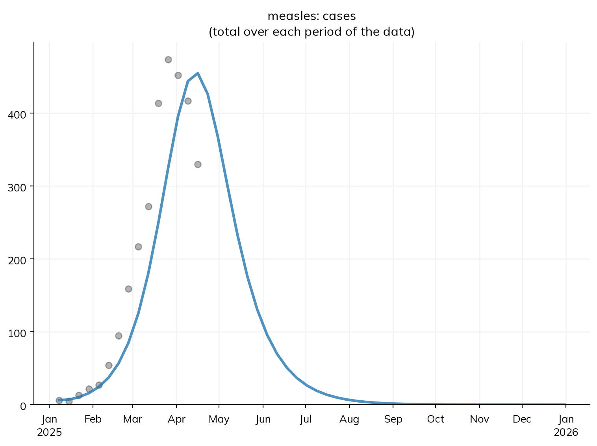
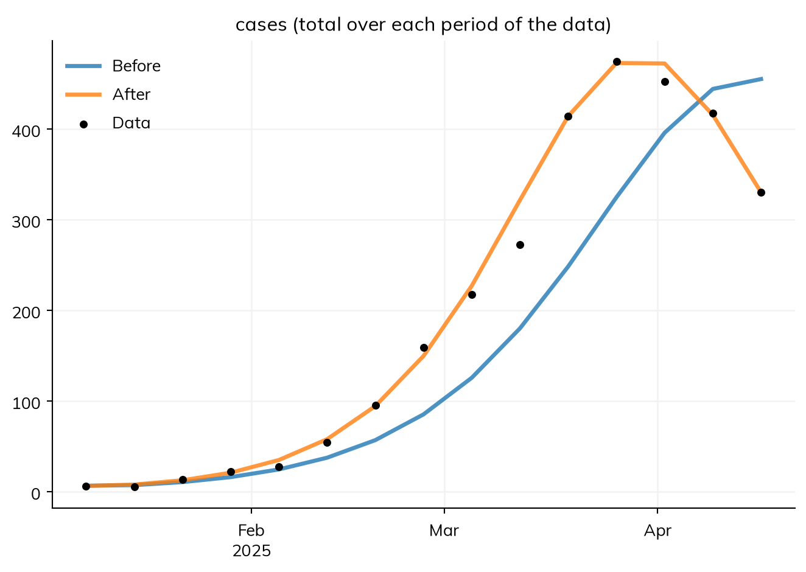
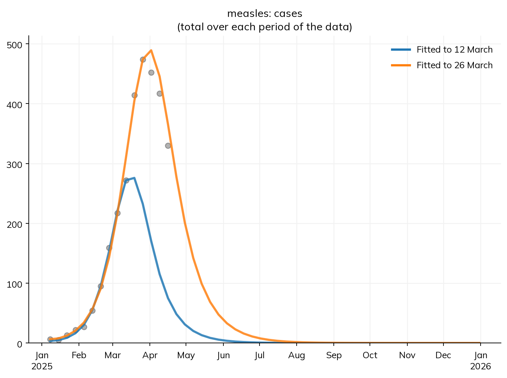
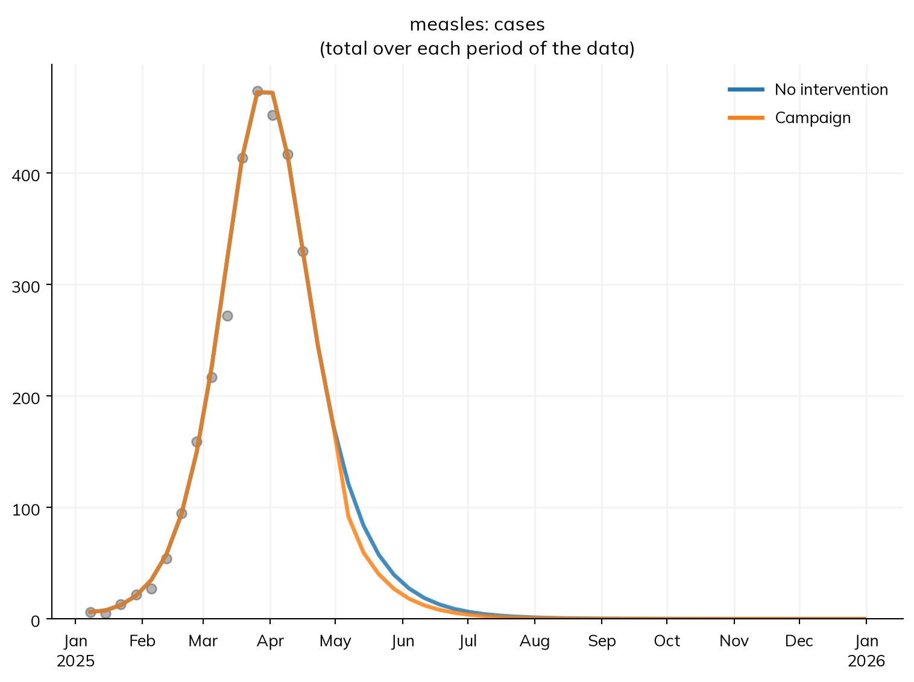

import starsim as ss
import pandas as pd
S, E, I, R = ss.states('S E I R')
beta = ss.par(0.14, bounds=[0.05, 0.5]) # The rate of infection per contact with an infectious person, per day
reported = ss.par(0.5, bounds=[0.05, 1]) # The share of infections that are reported
infection = S >> E @ beta*I # Infection, at a rate of β times the contacts with infectious people
progression = E >> I @ ss.days(10) # Latent for 10 days on average
recovery = I >> R @ ss.days(8) # Infectious for 8 days on average
cases = ss.outcome(reported*infection) # Reported cases: a share of new infections
measles = ss.Disease(infection, progression, recovery, cases,
init = dict(R=ss.by(age=[0.8, 0.92, 0.98])), # The share immune in each age group
init_n = dict(I=10), # 10 people infectious at the start
)
measles.stratify(age={0: 0.3, 15: 0.6, 65: 0.1}) # Ages 0-14, 15-64, and 65+
contacts = ss.contacts(ages=[0, 15, 65], matrix=[[10, 6, 1], [3, 8, 1], [3, 6, 3]]) # Contacts a day, between age groups
settings = dict(networks=contacts, total_pop=100_000, start='2025-01-01', stop='2026-01-01')T7 – Data and calibration
Which values of the model’s parameters are consistent with the cases reported so far, and what do they say about what comes next?
A model’s parameters are rarely all known. The rate of infection per contact, or the share of cases that are reported, can’t be measured directly, but they shape what the model predicts. Calibration is fitting a model’s parameters to data: finding the values that make the model’s results match what was observed. A model calibrated to an outbreak so far can then be used to ask what happens next, and what an intervention would do.
In this tutorial, it is mid-April, and measles cases have been reported each week since January. By the end, you will be able to:
- say what the data measure, as an outcome of the model;
- load data from a file and attach it to the model’s results by name;
- fit the model’s parameters to the data, and check the fit, including against data it wasn’t given;
- project from the fitted model, with and without a vaccination campaign.
The model and what the data measure
This is the model from T5 – Interventions and scenarios: measles in a town of 100,000 people in three age groups, most of them already immune, with 10 people infectious on 1 January.
Two things are new. First, data rarely measure a model’s states directly. A health office doesn’t count everyone infected, only the cases that are reported: people who saw a doctor, whose measles was recognized, and whose case was notified. For measles, this is often less than half of all infections. An outcome is a result that the model computes from its states and transitions, to be compared with what was observed (see Outcomes). Here, cases is a share of new infections (reported*infection): on each day, the number of reported cases is reported times the number of people infected that day. Like any result, it is in sim.results.measles.cases after a run.
Second, neither β nor the share reported is known, so each is a parameter with bounds (ss.par(..., bounds=...)). The bounds say which values are plausible, and so which values a fit may try; the values given (0.14 and 0.5) are the starting guesses. The two parameters do different things: β sets how fast the outbreak grows and how many people it infects, while the share reported only scales how many of those infections appear in the data.
The data
The file data/measles_cases.csv has the number of measles cases reported each week, from the week ending 8 January to the week ending 16 April:
data = pd.read_csv('data/measles_cases.csv')
data| date | cases | |
|---|---|---|
| 0 | 2025-01-08 | 6 |
| 1 | 2025-01-15 | 5 |
| 2 | 2025-01-22 | 13 |
| 3 | 2025-01-29 | 22 |
| 4 | 2025-02-05 | 27 |
| 5 | 2025-02-12 | 54 |
| 6 | 2025-02-19 | 95 |
| 7 | 2025-02-26 | 159 |
| 8 | 2025-03-05 | 217 |
| 9 | 2025-03-12 | 272 |
| 10 | 2025-03-19 | 414 |
| 11 | 2025-03-26 | 474 |
| 12 | 2025-04-02 | 452 |
| 13 | 2025-04-09 | 417 |
| 14 | 2025-04-16 | 330 |
NoteWhere this data comes from
This data is illustrative, not real: it was made once, from this model, with β = 0.16 and 40% of infections reported, so that we can see whether a fit finds those values. The weekly totals of the model’s reported cases were drawn as Poisson counts, as real counts vary by chance, with to_data(), using its own random seed:
truth = ss.Sim(measles, pars=dict(beta=0.16, reported=0.4), rand_seed=2, **settings).run()
data = truth.to_data('cases', resample='week') # Weekly cases, as Poisson counts
data = data[data.date <= ss.date('2025-04-16')] # Up to mid-April
data.to_csv('data/measles_cases.csv', index=False)The data is matched to the model’s results by name: the column cases is compared with the outcome cases, and the column date gives the time of each row (the end of the week). Since each row is a week’s total, it is compared with the total of the model’s daily cases over that week. To attach the data, give it to the sim. Plotting the cases then shows the data with the model’s results, here with the starting guesses:
sim = ss.Sim(measles, data=data, **settings)
sim.run()
sim.plot('measles.cases')Sim: measles, 100,000 people, as an ODE, 2025-01-01 to 2026-01-01
measles: R0 = 15.8 (R = 2.46 at the start, with 11% susceptible), with 10 infectious at the start
Note: people do not age between the age groups, since nobody is born or dies; pass use_aging=True to age them
Done in 0.0093 s; measles: 8,795 infections; at most 934 infectious, on 2025-04-27
The plot shows the model’s cases as weekly totals, as they are compared with the data. With the starting guesses, the model’s outbreak rises more slowly than the data’s, and is still rising in mid-April, after the data has peaked.
Fitting and checking the fit
sim.fit() fits every parameter that has bounds (here β and reported) to every result that has data (here cases). It tries values within the bounds, runs the model with each, and keeps the values whose results are closest to the data. By default, “closest” is the smallest mismatch: the average difference between the model’s cases and the data, relative to the size of the data. The fit says how it searched, and whether the search converged (here, whether searches from different starting points ended in the same place):
fit = sim.fit()Searching on a log scale: beta, reported
Fitting by nelder-mead (2 fitted parameters, for which it is faster than gradients; override with method=)
Converged: the best two of 3 searches, from points of the scan that are apart, ended within 3.7e-05 of each other (objective values 0.03678 at beta=0.1618, reported=0.4089; 0.03678 at beta=0.1618, reported=0.4089; 0.03679 at beta=0.1618, reported=0.409; 394 evaluations)
The goodness of fit is 0.03678 at the best values and 0.2875 at the initial valuesThe original sim is not changed: the fit holds the values it found (fit.pars), the sim with the starting guesses (fit.before), and a sim run with the fitted values (fit.sim).
A fit always finds some values, so check that they make sense. First, the values, and how much better they fit than the starting guesses:
fit.summarize()Fitted 2 parameter(s) by nelder-mead, with 415 evaluations
Goodness of fit: 0.2875 before, 0.03678 after
Converged: the best two of 3 searches, from points of the scan that are apart, ended within 3.7e-05 of each other (objective values 0.03678 at beta=0.1618, reported=0.4089; 0.03678 at beta=0.1618, reported=0.4089; 0.03679 at beta=0.1618, reported=0.409; 394 evaluations)| par | initial | best | low | high | |
|---|---|---|---|---|---|
| 0 | beta | 0.14 | 0.161831 | 0.05 | 0.5 |
| 1 | reported | 0.50 | 0.408915 | 0.05 | 1.0 |
The fit finds β close to 0.16 and a reported share close to 40%, the values the data was made with, and the mismatch falls from 0.29 with the starting guesses to 0.04. Second, look at the model against the data, before and after fitting:
fit.plot()
The fitted model (“After”) follows the rise, the peak, and the start of the fall of the data, and the data scatters around it about as much as Poisson counts should; the model with the starting guesses (“Before”) peaks too late. Look for departures that are systematic rather than random: a peak that comes too early or too late, a fall that is too slow, or residuals that are all on one side for weeks at a time. Third, check what the values imply. R0 is in proportion to β, so with β = 0.16 rather than 0.14, R0 is about 16 × 0.16 / 0.14 ≈ 18, at the top of the range usually given for measles (12 to 18). If a value had ended at the edge of its bounds, or had implied an R0 of 50, the model or the bounds would need another look.
The fit here is good because the data was made with this model. With real data, the model is never exactly right, and these checks are how you find out where it falls short. Fit diagnostics in the user guide goes further.
Testing the fit on data it wasn’t given
A model that matches the data it was fitted to may still predict badly: with two free parameters, many curves can pass near a dozen points. A stronger test is to fit the model to the data up to some date, and see how well it predicts the weeks after it, which it wasn’t given. Here, the model is fitted to the data up to 12 March (during the rise) and up to 26 March (around the peak), and each fit is run with all the data attached, so that its predictions can be compared with the weeks it didn’t see:
cutoffs = {
'Fitted to 12 March': '2025-03-12',
'Fitted to 26 March': '2025-03-26',
}
sims = {}
for label, cutoff in cutoffs.items():
early = ss.Sim(measles, data=data[data.date <= cutoff], **settings).fit(verbose=False)
print(label, '- beta:', round(early.pars.beta, 3), '- reported:', round(early.pars.reported, 2))
sims[label] = ss.Sim(measles, pars=early.pars, data=data, **settings)
msim = ss.parallel(sims)
msim.plot('measles.cases')Fitted to 12 March - beta: 0.19 - reported: 0.19
Fitted to 26 March - beta: 0.159 - reported: 0.43
MultiSim: 2 runs of 2 scenarios (Fitted to 12 March, Fitted to 26 March)
Done in 0.17 s
Both fits match the data they were given, but they don’t agree about what comes after. Fitted to the rise alone, the model finds a higher β and only 19% of infections reported, and predicts that the outbreak peaks within a week, at about 280 cases a week, when it went on to peak at about 470. Once the data includes the peak, the fit is close to the true values, and predicts the following weeks well.
The reason is that while an outbreak is growing, its rate of growth depends mostly on β, but the number of cases reported depends on both how many people are infected and the share of them reported: a smaller outbreak with more of it reported gives nearly the same rise as a larger outbreak with less of it reported. The outbreak turns when susceptible people run out, so only the peak says how many people have been infected, and so what share of them were reported. When two parameters can trade off like this, the data can’t tell them apart (they are not identifiable from it); Parameter identification shows how to check for this before trusting a fit.
Projecting from the fit
The data ends in mid-April, but the fitted sim, fit.sim, runs to the end of the year, so it projects the rest of the outbreak. To ask what a vaccination campaign on 1 May would do, make a scenario from it. sim.new() makes a new sim from the same inputs as an existing one, with whatever is given changed: here, the fitted sim with a campaign added.
campaign = ss.vaccinate(efficacy=0.93, where=measles.age < 15, coverage=0.8, at='2025-05-01')
sims = {
'No intervention': fit.sim,
'Campaign': fit.sim.new(interventions=campaign),
}
msim = ss.parallel(sims)To see the whole year, plot the cases with the data. Since the data is weekly, the plot shows the model’s weekly totals, as the fit compares them, over the weeks with data and the rest of the year:
msim.plot('measles.cases')
msim.summarize().loc['measles_cases']| value | |
|---|---|
| scenario | |
| No intervention | 3843.774907 |
| Campaign | 3727.499232 |
By 1 May, the outbreak has already peaked, so the campaign prevents only about 120 reported cases, 3% of them, much less than a campaign on 1 March did in T5. The data says how far the outbreak has gone, and so how much is left for an intervention to prevent.
These projections use the best-fitting values only. Other values fit the data nearly as well, so a projection is uncertain too; Fitting a model in the user guide shows how to find the range of values that fit (a posterior), and how to carry it into projections with fit.project(). It also covers fitting stochastic and agent-based models, likelihoods, and other ways to measure the mismatch.
Exercises
- Start the fit from different guesses, e.g. β = 0.3 and 20% reported (
ss.Sim(measles, pars=dict(beta=0.3, reported=0.2), data=data, **settings)). Does it find the same values? Then fit to the data up to 12 March from both starting points. What does the difference say? - Fit only β, keeping the reported share at 50% (
sim.fit(pars=['beta'])). How does the fit look, and how does the projected size of the outbreak compare with that of the fit of both parameters? - Project a campaign on 1 April instead of 1 May (using the fit of the data to mid-April). How many reported cases would it have prevented?
Further reading
- pomp: Simulation-based inference for epidemiological dynamics: a full course on fitting stochastic epidemic models to case data, with a case study of measles
- Stan: Bayesian workflow for disease transmission modeling: fitting an SIR model to an outbreak, with checks of the fit and of its identifiability
- epydemix: Calibration of epidemic models to data: fitting a compartmental model to case data by approximate Bayesian computation